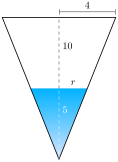

Section 10.2 Similar triangles
At the beginning of the previous section I promised you we would look at two different notions of when triangles are the same. Last section we looked at one notion, congruence. In this section we look at the second, called similarity.
Remember that congruence captured the idea of a shape being the same even if you move it around. If you take a triangle and translate it, rotate it, or reflect it then it’s still the same triangle. Same lengths, same angles, same everything, just in a different place. Similarity takes that idea and says, what if you could also zoom in or out.
Definition 10.2.1. Scalings.
A
uniform scaling is a transformation of a shape that enlarges or shrinks it the same amount in all directions. This is as opposed to a
(non-uniform) scaling, which only scales in one direction. The
scale factor is the amount by which all distances are scaled. For example, a uniform scaling with a scale factor of
\(3\) would triple the size of the shape in all directions. while a non-uniform scaling in a horizontal direction would scale the shape by
\(3\) only in the left-right direction.
You also see the word
dilation used for a scaling with a scale factor
\(\gt 1\) and the word
contraction used for a scaling with scale factor
\(\lt 1\text{.}\) We allow scaling by a factor of
\(1\)—that is, the “do nothing” scaling that doesn’t change sizes.
A cloud shape being scaled both uniformly and non-uniformly. The uniform scaling, by a factor of
\(2\text{,}\) is shown to the right. This amounts to blowing up it to be twice as big in every direction. There are two non-unform scaling, both by a factor of
\(2\text{.}\) One, a vertical scaling, is shown above right. The original cloud was a little wider than it was tall, and this scaling reverses that comparison. The other, a horizontal scaling, is below right. It stretches out the cloud to be even more wider than it is tall. You can think of the uniform scaling, appropriately seen in between the horizontal and vertical scalings, as the combination of the two.
One way to think about a uniform scaling is that it is a combination of two non-uniform scalings by the same scaling factor. If you scale horizontally by, say, a factor of
\(3\) and then scale vertically by that same factor, it is equivalent to a uniform scaling by a factor of
\(3\text{.}\) The reason you need to combine two (non-uniform) scalings in two perpendicular directions is that these shapes live in two dimensional space: one scaling for each dimension. If you wanted to talk about scalings in three dimensional space you’d need three non-uniform scalings together to make up a uniform scaling. And similarly for more dimensions, though this gets difficult to visualize.
Scaling can also be understood by thinking about its affect on area. A non-uniform scaling by a factor of
\(K\) will scale area by
\(K\text{.}\) Thus, a uniform scaling by a factor of
\(K\) will scale area by
\(K^2\text{,}\) because it amounts to scaling by
\(K\) twice in two different directions.
Definition 10.2.2. Similar triangles.
A
similarity is a transformation that consists of a sequence of uniform scalings, translations, rotations, or reflections. Two triangles are
similar if you can transform one into the other by means of a similarity. That is, if you take a triangle and translate, rotate, reflection, and/or uniformly scale it, the result is similar to the triangle you started with.
Three similar isosceles right triangles. One is larger than the other. The angles between the three triangles all match but the sides are different sizes. The angles are marked so you can see the right angle in each triangle as well as the
\(45^\circ\) angles.
This definition captures the idea that two triangles look the same, but maybe rotated, moved about, reflected, or zoomed in/out.
Are congruent triangles similar? That is, if two triangles have the same size do we still count them as similar? Or do we only want to count them when they’re different sizes?
The mathematician’s answer is yes, triangles that are the same size are still counted as similar. In most cases, they won’t be. But we want to include the edge case. In general, mathematicians like to include edge cases in definitions because it makes things easier to talk about. For example, it makes facts like the following nicer to state.
Theorem 10.2.3.
If two triangles are similar then they have the same angles. That is, there is a way to label their angles
\(A,B,C\) and
\(A',B',C'\) so that
\(A = A'\text{,}\) \(B = B'\text{,}\) and
\(C = C'\text{.}\) Conversely, if two triangles have the same angles then they are similar.
Proof.
For the first “if-then”: Because none of the transformations in a similarity—uniform scalings, translations, rotations, reflections—change angles. For the converse do like what we did with congruence. Use translations, reflections, and/or rotations to make the angles
\(A\) and
\(A'\) exactly line up with the other two angles each on the same side. Then rescale so the side lengths are the same to make the triangles overlap exactly.
Compare to the result about congruence, namely that two triangles are congruent if and only if their angles and sides are the same. Similarity is a less stringent notion of sameness, where only the angles have to be the same.
It might seem that this notion of sameness isn’t restrictive enough to be helpful—what good is it to know that two triangles have the same angles? But in fact we get some good information out of triangles being similar.
Theorem 10.2.4.
If two triangles are similar then the ratios of side lengths are the same. That is, if the sides \(a,b,c\) correspond, respectively, to the sides \(a',b',c'\) on the other triangle, then any ratio of sides on the left is the same as the corresponding ratio of sides on the right. For example,
\begin{equation*}
\frac ab = \frac{a'}{b'}.
\end{equation*}
Proof.
Let \(K\) be the scaling factor of the uniform scaling to transform the first triangle to the other. Then, for example, \(a' = Ka\) and \(b' = Kb\text{.}\) Thus,
\begin{equation*}
\frac{a'}{b'} = \frac{Ka}{Kb} = \frac ab.
\end{equation*}
Indeed, this ratio facts holds not just for side lengths but any pair of measurements you can make of the triangles. For example, if
\(K\) is the scaling factor and
\(h\) is the height of one triangle then the height of the other triangle will be
\(Kh\text{.}\)
Checkpoint 10.2.5.
Shadows are cast at the same angle, so that triangles made from a vertical object and its shadow on horizontal ground are all similar. You know that you are exactly
\(5\) feet tall and your friend measures that your shadow is
\(2\) feet long. A flagpole casts a shadow you measure to be
\(5\) feet long. How tall is the flagpole?
A human and a flagpole casting shadows on the ground. Imagining a line drawn from the top of the human (respectively flagpole) diagonally down to the edge of the shadow these form similar right triangles. Both the human and the flagpole are depicted as vertical lines. This is to emphasize that all that matters here is their height—geometrically, a simple vertical line segment—and not because a more accurate depiction would challenge the artistically disinclined mathematician writing this textbook. The shadows are grey ellipses. I nailed them.
Solution.
Let \(y\) denote the height of the flagpole. Using the fact that the triangles are similar you know that
\begin{equation*}
\frac{5}{2} = \frac{y}{5}.
\end{equation*}
Solving this equation for \(y\) you get \(y = 25/2 = 12.5\) feet for the height of the flagpole.
This fact about similar triangles is one of the key truths on which the mathematical field of trigonometry is built. This field is the study of circles, triangles, and their angles. If two right triangles have the same (non-right) angle \(A\text{,}\) then they have the same ratios of side lengths. Thus we can think of ratios like
\begin{equation*}
\frac{\mathrm{opposite}}{\mathrm{hypotenuse}}
\end{equation*}
as functions of the angle \(A\text{.}\) (For this ratio, the function is the sine function.) We can then study these functions and use them to get information about triangles and circles.
One place similar triangle show up is when two triangles share an angle but one is a shrunken/enlarged copy of the other.
Checkpoint 10.2.6.
A conical vat has a depth of
\(10\) meters and a radius at the top of
\(4\) meters. It is filled with water to a depth of
\(5\) meters. What is the volume of water?
An inverted cone. Dashed lines label the height—
\(10\)—and radius at the top—
\(4\text{.}\) Placed inside the inverted cone is a smaller blue cone with the same point, representing the water. Off to the side a ruler marks its height as
\(5\text{.}\)
Solution.
If you draw the view of the vat and water from the side it looks like two similar triangles. Thus the ratio of the depth to the radius must be the same for both the vat and the water.

The cone from the previous image, but seen straight on so that it looks like an inverted triangle with a smaller similar blue triangle inside. The height of the big triangle is labeled
\(10\text{,}\) the height of the blue triangle is labeled
\(5\text{.}\) Half the length of the top of the big triangle, corresponding to the radius of the top of the cone, is labeled
\(4\text{.}\) Similarly, half the top of the blue triangle is labeled
\(r\text{.}\)
Let \(r\) denote the radius of the cone of water. By similar triangles, we know
\begin{equation*}
\frac{r}{5} = \frac{4}{10}.
\end{equation*}
Solving for \(r\) we get \(r = \frac{20}{10} = 2\) meters. Now knowing the radius and height of the water cone we can apply the formula for the volume of a cone. Namely, the volume is
\begin{equation*}
\frac13 \pi \cdot 2^2 \cdot 5 = \frac{20\pi}{3} \approx 20.9
\end{equation*}
cubic meters.
Checkpoint 10.2.7.
An hourglass takes the shape of two pyramids touching at their tips, each having a square base. At a moment in time, the sand in the top pyramid has a depth of
\(2\) inches. If the glass pyramid has a depth of
\(6\) inches and a side length at the top of
\(2\) inches what is the volume of sand in the top of the hourglass?
Hint.
Draw a picture! A two dimensional cross section will be more helpful than just a three dimensional sketch.
To pick things apart, there’s two ideas we’re using here. One is that if a shape A is a uniform scaling of another shape B by a factor of
\(K\) then all measurements of A are
\(K\) times the corresponding measurement of B. In particular, this means that ratios between two measurements are the same across shapes.
The second idea is that for triangles, having the same angles is a sufficient condition to guarantee similarity. In general, it might not be obvious that two shapes are similar. But with triangles there’s an easy way to check, and it shows up often. A case that shows up a lot is when one triangle is an initial piece of a larger triangle, sharing a common vertex. A bit more formally, consider two triangles sharing a vertex with the same angle and their respective sides opposite the angle are parallel. Then elementary plane geometry says all three angles are the same between the triangles, so they are similar.
Two rays coming out diagonally down from a point. This point forms one vertex of two similar triangles, each of which is formed by drawing a horizontal line between the two rays. The two triangles have the same angles, so they are similar.
On the other hand, this phenomenon doesn’t happen with, for instance, rectangles. If one rectangle is an initial segment of another then they won’t be similar.
Two rectangles. The smaller, actually a square, is an initial left segment of the other. The two rectangles share their left side and their tops and bottoms are parts of the same ray. The rectangles are not similar. You can tell because one is a square but the other is not.
That being said, similarity is still a powerful concept in general. It just doesn’t happen to be so easy to notice.